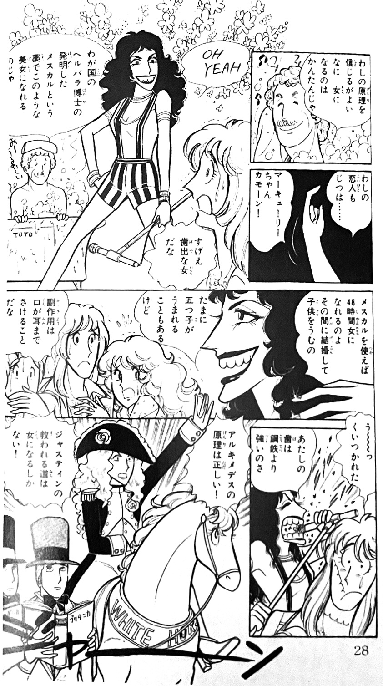
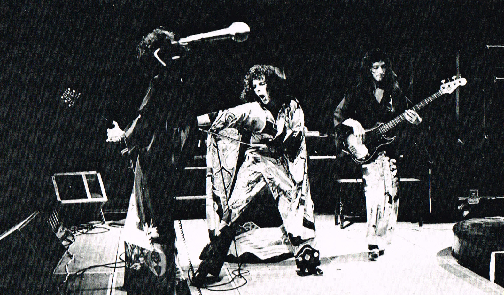
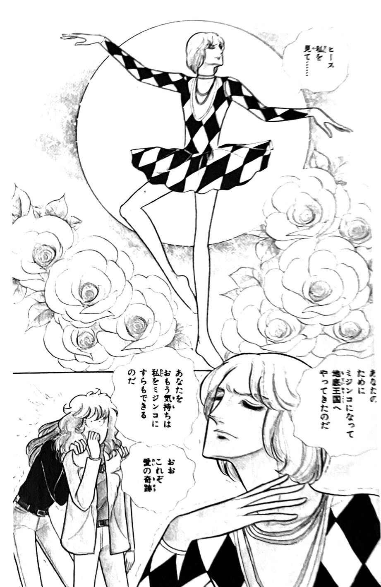

Queen in Shoujo Manga
Shoujo manga is a genre of manga specifically intended for an audience of middle and high school-aged girls, although it may be enjoyed by people of many ages. It's almost always drawn by women. Hallmarks of the style include the stereotypical "Japanese anime" look of big expressive eyes, flowing hair and elaborate clothes, and a focus on emotion rather than action in the storytelling. Perhaps the most famous example of the shoujo genre is Sailor Moon.
  
More than a few Japanese sources comment on the early 70s Queen-bishounen connection, and the mutual influence that the popularity of shoujo manga and rock music had on each other at the time. Many shoujo manga artists of this period were huge rock music enthusiasts, and many contemporary bands were inserted into their stories, either explicitly or hidden as background characters. Popular titles that involved characters modeled on rock musicians of the time include Sons of Eve and the long-running Eroica with Love.
To provide context, it also must be mentioned that many of these rock-centric shoujo manga contained works of what is known as "boys' love", or "BL", which is a homosexual romance subgenre of shoujo manga that gained prominence in the 70s and 80s. Gay romance stories between bishounen burgeoned in 1970s Japan, and existed along a spectrum that ran from chaste and subtextual to pornographic (the latter mostly found in doujinshi for slightly older audiences). Genderbending, exemplified by Riyoko Ikeda's hit manga Rose of Versailles, was another feature of shoujo manga. The Japanese fascination with genderbending and cross-dressing manifests in all-women's Takarazuka theater troupes, and has even earlier roots in traditional kabuki theater, which became a male-only artform after women were banned from it during the Edo period.
This section of Queen in Japan is dedicated to confirmed Queen sightings in 1970s and 80s manga, shoujo or otherwise. This section, therefore, features what is basically a type of fanfiction, with varying levels of alignment with reality. Please be mindful of this when deciding whether you want to explore this section of the site, and read QIJ's policy on translating BL content (tldr: I won't be).
Rock'n'Roll from Top to Bottom by Nachi Mikami — A lighthearted expansion of Queen's origin story, somewhat based on the true story.
Watch Out for those Rock Dudes! by Shihori Sato — A cute romance story involving a character based on Brian May
Metamorphosis into a Miracle by Shotaro Ishimori — An origin comic that appeared in an issue of Recopal magazine
8 Beat Gag by Atsuko Shima — A long-running comic series that features many different musical artists and acts
Queen Story: A Gorgeous Trajectory by Ikumi Ohbama — Appeared in Rock Magazine vol. 1
Pure Rock Picturebook — A rock-themed illustration collection featuring many shoujo manga artists
More to come!